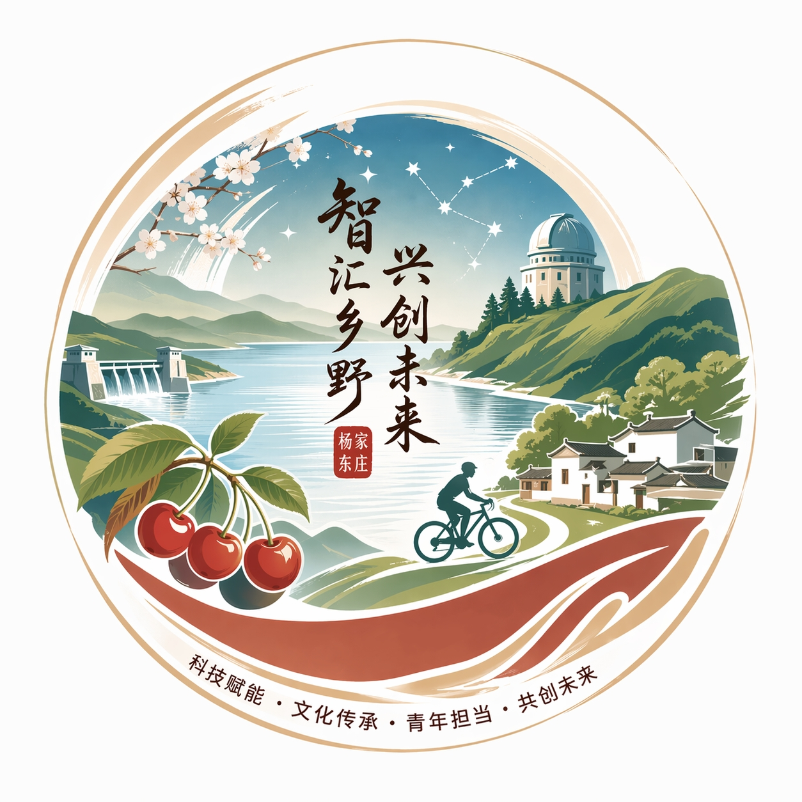

水岸樱 · 产品溯源系统
生态樱桃 · 产地直供 · 全流程可追溯

📦 产品信息

产品名称：水岸樱生态樱桃
产品类型：新鲜水果
批次编号：CHERRY20250601
采摘时间：2025年6月
🍒 樱桃展示

精选成熟樱桃，果色鲜亮，口感清甜，适合鲜食与礼盒包装。
🌱 种植环境
采用生态化果园管理方式，控制灌溉、施肥、采摘和运输流程，保障果品品质稳定。
💧 水源与环境监测

灌溉水源清洁，果园周边环境良好，定期进行环境与果品质量监测。
✔ 生态种植记录完整
🔬 检测信息
| 检测项目 | 农残检测、外观品质、糖度检测 |
| 检测结果 | 符合鲜食水果质量要求 |
| 追溯状态 | 可查询、可追踪、可复核 |